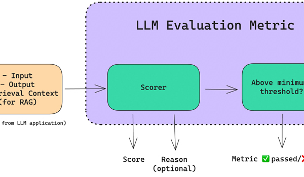
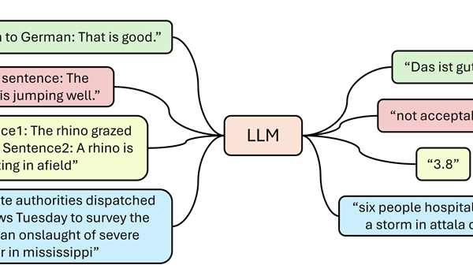
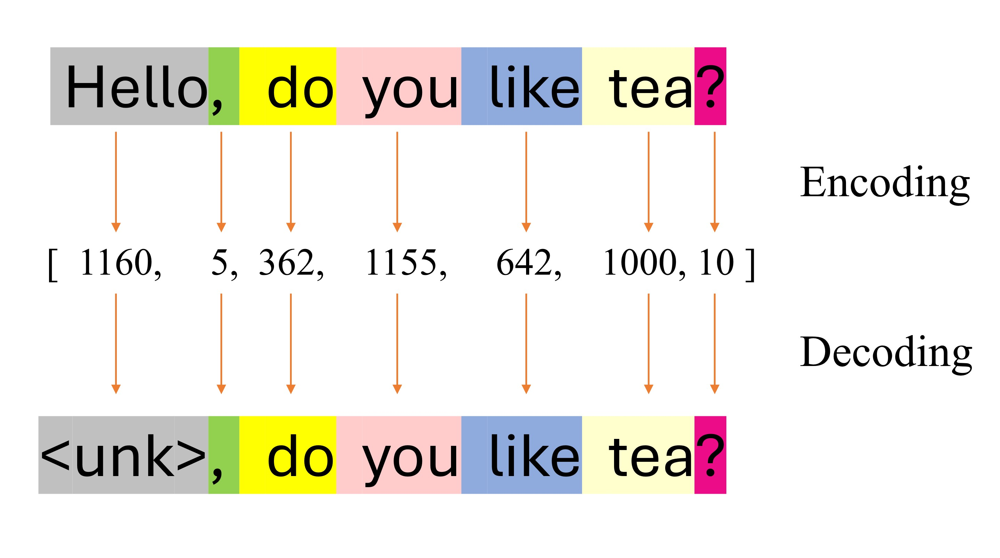
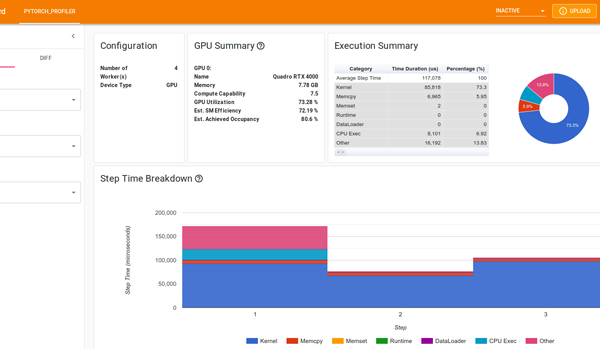
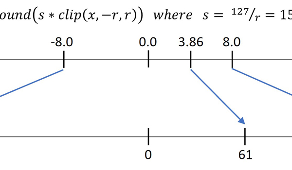

|
Step into my technical blog world! Here, I talk about cool stuff of large language models (text, vision), classical machine learning and MLOps. I am trying to explain tricky things in a storytelling way. Whether you know a lot about these concepts or just a bit, my blogs will help you to learn or refresh your concepts. I will share new posts covering advance topics. |

Quantized LoRA |

LLM Evaluation Hub |

Prompt Engineering |

Distributed Training Techniques |

Tokenization and Embeddings |

Training Optimization Techniques |
|

Efficient Inference Techniques |
|
|